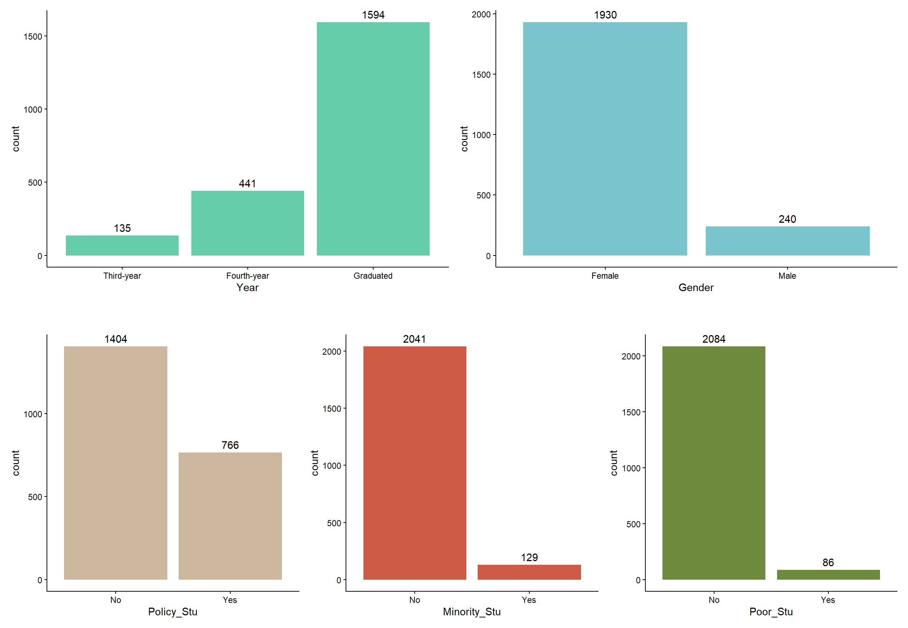
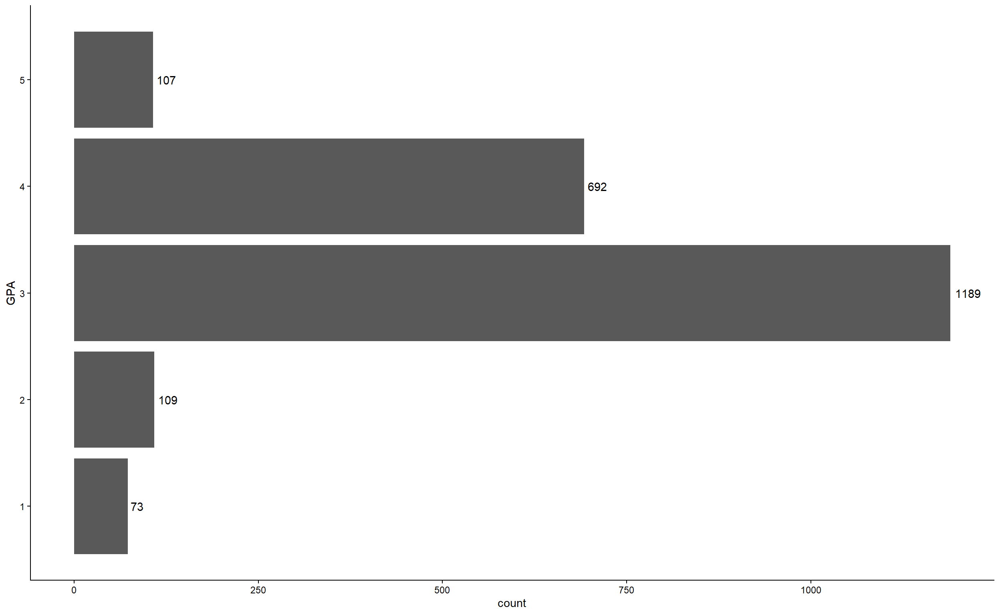
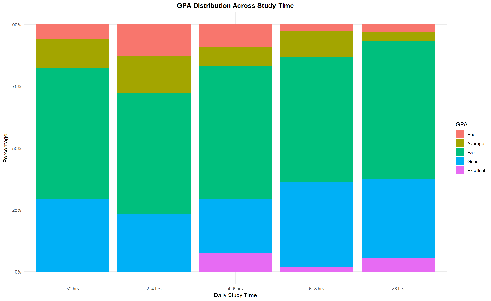
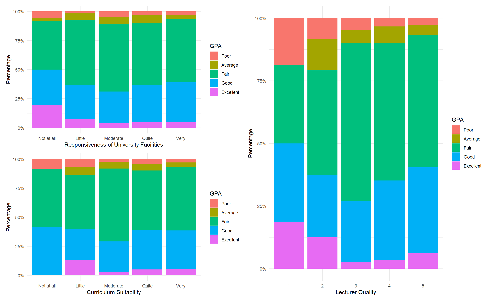
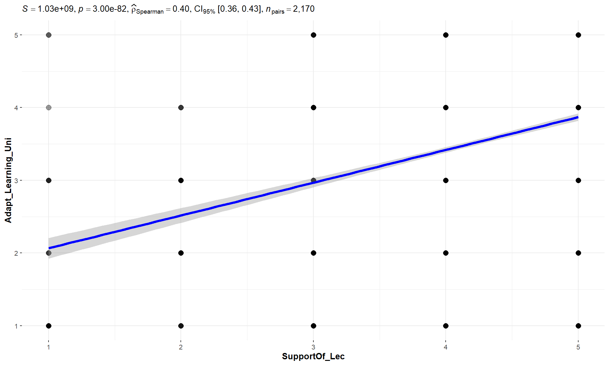

pacman::p_load(tidyverse, readxl, patchwork, ggstatsplot)Take-Home Exercise 1
Investigating factors affecting learning outcomes of students at the University of Education, Vietnam National University
1. Overview
1.1 Background
Student learning outcomes are widely recognized as a key indicator of educational quality and institutional effectiveness. Understanding what influences student performance can help institutions improve teaching approaches, strengthen support systems, and create learning environments that encourage success. As higher education continues to evolve alongside technological and social changes, examining these factors has become increasingly relevant for educators and researchers alike.
This study focuses on students from the University of Education, Vietnam National University, Hanoi, and explores the factors that may shape their academic outcomes. By looking at aspects such as lecturers’ quality, university support, curriculum structure, facilities, classroom competition, and peer influence, the dataset offers useful insights into the conditions that contribute to student achievement and overall learning experiences.
1.2 The data
The dataset for this exercise was retreived from Mendeley Data - Dataset about VNU students. It is provided in .xlsx format and is accompanied by a codebook that outlines the question types and survey response options in English.
The dataset was collected through a structured survey administered between March and June 2023 to students and alumni of the University of Education, Vietnam National University, Hanoi. A total of 2,170 respondents participated, providing information on multiple dimensions that may affect learning outcomes.
1.3 The task
Using this dataset, the objective is to apply appropriate Exploratory Data Analysis (EDA) techniques and data visualization methods to uncover meaningful insights into the factors affecting student learning outcomes. The analysis will focus on identifying patterns, distributions, and relationships among key variables, as well as examining how different academic and institutional factors contribute to student success.
2. Getting Started
For this exercise, the below R packages will be used:
tidyverse - a collection of R packages used for data manipulation, cleaning, transformation, and visualisation
readxl - used to import the Excel worksheet
patchwork - used for creating composite figures using ggplot2
ggstatsplot - used for statistical inference methods
The code chunk below will be used to accomplish this task.
The code chunk below imports the dataset using read_xlsx() of the readxl package.
vnu <- read_xlsx("../data/Database_paper.xlsx", sheet=1) Upon importing, we need to first check whether the imported data is accurate and complete. To do that, we can go to the Environment tab in RStudio -> click on vnu under Data, where we can see that there are 2170 rows and 22 columns, which is the same as the original excel file.
Additionally, the glimpse() function of dplyr package (part of tidyverse) can also be used to check the above. It also gives us the data types of the variables, which in this case are all dbl data type (double-precision floating-point numbers).
glimpse(vnu)Rows: 2,170
Columns: 22
$ Year <dbl> 5, 5, 5, 5, 5, 5, 5, 5, 5, 5, 5, 5, 5, 5, 5, 5, 5, …
$ Gender <dbl> 2, 1, 2, 2, 1, 2, 2, 2, 2, 2, 1, 2, 2, 2, 2, 2, 2, …
$ Policy_Stu <dbl> 2, 2, 2, 2, 1, 2, 2, 2, 2, 2, 2, 2, 2, 1, 2, 2, 2, …
$ Minority_Stu <dbl> 2, 2, 2, 2, 2, 2, 2, 2, 2, 2, 2, 2, 2, 2, 2, 2, 2, …
$ Poor_Stu <dbl> 2, 2, 2, 2, 2, 2, 2, 2, 2, 2, 2, 2, 2, 2, 2, 2, 2, …
$ Father_Edu <dbl> 4, 3, 4, 5, 2, 5, 6, 5, 5, 5, 3, 3, 3, 3, 3, 4, 5, …
$ Mother_Edu <dbl> 4, 3, 4, 4, 3, 5, 5, 4, 5, 4, 3, 3, 3, 4, 3, 4, 5, …
$ Father_Occupation <dbl> 2, 2, 1, 1, 3, 1, 1, 5, 1, 3, 3, 3, 3, 3, 2, 2, 4, …
$ Mother_Occupation <dbl> 3, 4, 2, 1, 3, 2, 4, 3, 1, 3, 3, 3, 3, 3, 2, 2, 4, …
$ Time_Friends <dbl> 2, 1, 1, 2, 1, 1, 2, 2, 1, 3, 2, 2, 2, 2, 2, 1, 3, …
$ Time_SocicalMedia <dbl> 2, 3, 2, 2, 2, 3, 2, 2, 2, 2, 2, 1, 2, 2, 2, 3, 4, …
$ Time_Studying <dbl> 5, 5, 5, 5, 1, 2, 5, 5, 5, 5, 5, 5, 5, 1, 5, 5, 5, …
$ GPA <dbl> 4, 3, 4, 4, 4, 4, 3, 5, 5, 3, 3, 4, 4, 3, 5, 4, 4, …
$ Adapt_Learning_Uni <dbl> 4, 3, 4, 4, 5, 4, 4, 4, 4, 3, 4, 4, 4, 5, 4, 4, 5, …
$ Study_Methods <dbl> 4, 3, 4, 4, 5, 4, 4, 4, 4, 4, 4, 4, 4, 5, 4, 3, 5, …
$ SupportOf_Uni <dbl> 3, 3, 4, 5, 5, 5, 5, 5, 4, 5, 4, 4, 4, 5, 4, 4, 5, …
$ SupportOf_Lec <dbl> 4, 4, 4, 5, 5, 4, 5, 4, 4, 5, 4, 4, 4, 5, 4, 4, 5, …
$ Facilitie_Uni <dbl> 4, 4, 3, 5, 5, 5, 5, 4, 4, 5, 4, 4, 4, 5, 4, 3, 5, …
$ Quality_Lecturer <dbl> 4, 3, 4, 5, 5, 5, 4, 5, 5, 5, 4, 4, 4, 5, 4, 4, 5, …
$ TrainingCurriculum <dbl> 4, 3, 4, 4, 5, 4, 5, 4, 4, 5, 4, 4, 4, 5, 4, 3, 5, …
$ Competitive_Class <dbl> 3, 3, 4, 4, 4, 3, 4, 3, 4, 4, 4, 4, 4, 5, 4, 4, 5, …
$ InfuenceF_Friends <dbl> 3, 4, 4, 4, 5, 3, 5, 4, 4, 4, 4, 4, 4, 5, 4, 5, 4, …We also use summary() to verify that all values fall within the expected ranges for each question (e.g., 1 to 5 for certain survey items) and to ensure that no invalid or unexpected values are present.
summary(vnu) Year Gender Policy_Stu Minority_Stu Poor_Stu
Min. :3.000 Min. :1.000 Min. :1.000 Min. :1.000 Min. :1.00
1st Qu.:4.000 1st Qu.:2.000 1st Qu.:1.000 1st Qu.:2.000 1st Qu.:2.00
Median :5.000 Median :2.000 Median :2.000 Median :2.000 Median :2.00
Mean :4.672 Mean :1.889 Mean :1.647 Mean :1.941 Mean :1.96
3rd Qu.:5.000 3rd Qu.:2.000 3rd Qu.:2.000 3rd Qu.:2.000 3rd Qu.:2.00
Max. :5.000 Max. :2.000 Max. :2.000 Max. :2.000 Max. :2.00
Father_Edu Mother_Edu Father_Occupation Mother_Occupation
Min. :1.000 Min. :1.000 Min. :1.000 Min. :1.000
1st Qu.:3.000 1st Qu.:3.000 1st Qu.:2.000 1st Qu.:2.000
Median :4.000 Median :4.000 Median :3.000 Median :3.000
Mean :3.747 Mean :3.664 Mean :2.484 Mean :2.498
3rd Qu.:5.000 3rd Qu.:5.000 3rd Qu.:3.000 3rd Qu.:3.000
Max. :6.000 Max. :6.000 Max. :5.000 Max. :5.000
Time_Friends Time_SocicalMedia Time_Studying GPA
Min. :1.000 Min. :1.000 Min. :1.000 Min. :1.0
1st Qu.:1.000 1st Qu.:2.000 1st Qu.:5.000 1st Qu.:3.0
Median :2.000 Median :3.000 Median :5.000 Median :3.0
Mean :2.274 Mean :2.836 Mean :4.719 Mean :3.3
3rd Qu.:3.000 3rd Qu.:4.000 3rd Qu.:5.000 3rd Qu.:4.0
Max. :5.000 Max. :5.000 Max. :5.000 Max. :5.0
Adapt_Learning_Uni Study_Methods SupportOf_Uni SupportOf_Lec
Min. :1.000 Min. :1.000 Min. :1.000 Min. :1.000
1st Qu.:3.000 1st Qu.:3.000 1st Qu.:3.000 1st Qu.:4.000
Median :3.000 Median :4.000 Median :4.000 Median :4.000
Mean :3.502 Mean :3.662 Mean :4.001 Mean :4.186
3rd Qu.:4.000 3rd Qu.:4.000 3rd Qu.:5.000 3rd Qu.:5.000
Max. :5.000 Max. :5.000 Max. :5.000 Max. :5.000
Facilitie_Uni Quality_Lecturer TrainingCurriculum Competitive_Class
Min. :1.000 Min. :1.000 Min. :1.000 Min. :1.000
1st Qu.:3.000 1st Qu.:4.000 1st Qu.:4.000 1st Qu.:3.000
Median :4.000 Median :5.000 Median :4.000 Median :4.000
Mean :4.073 Mean :4.329 Mean :4.128 Mean :3.935
3rd Qu.:5.000 3rd Qu.:5.000 3rd Qu.:5.000 3rd Qu.:5.000
Max. :5.000 Max. :5.000 Max. :5.000 Max. :5.000
InfuenceF_Friends
Min. :1.000
1st Qu.:3.000
Median :4.000
Mean :3.831
3rd Qu.:5.000
Max. :5.000 3. Data Wrangling
3.2 Checking for missing values
Before making any changes to the variables, it is important to first check for missing values to prevent issues during recoding. If missing values are not identified beforehand, there is a risk of unintentionally assigning values to observations that were originally recorded as NA.
is.na() allows us to identify missing values in our dataset and sum() counts the frequency of such missing values.
sum(is.na(vnu))[1] 0There are no missing values in the dataset.
3.3 Recoding to Categorical Variables
The mutate() function from the dplyr package is used alongside recode() and factor() to convert the variables as per below. The recode() function is used to assign descriptive labels to nominal variables that have no natural order, while factor() is used for ordinal variables to convert them into categories and ensure they are displayed in the correct logical order during analysis and visualisation.
vnu <- vnu %>%
mutate(
Year = factor(Year,
levels = 1:5,
labels = c("First-year",
"Second-year",
"Third-year",
"Fourth-year",
"Graduated"),
ordered = TRUE))vnu <- vnu %>%
mutate(Gender = recode(as.character(Gender), '1' = 'Male', '2' = 'Female'))vnu <- vnu %>%
mutate(Policy_Stu = recode(as.character(Policy_Stu), '1' = 'Yes', '2' = 'No'))vnu <- vnu %>%
mutate(Minority_Stu = recode(as.character(Minority_Stu), '1' = 'Yes', '2' = 'No'))vnu <- vnu %>%
mutate(Poor_Stu = recode(as.character(Poor_Stu), '1' = 'Yes', '2' = 'No'))vnu <- vnu %>%
mutate(
Time_Studying = factor(Time_Studying,
levels = 1:5,
labels = c("<2 hrs","2–4 hrs","4–6 hrs","6–8 hrs",">8 hrs"),
ordered = TRUE)
)The glimpse() function is used again to check whether the above variables have been recoded correctly.
glimpse(vnu)Rows: 2,170
Columns: 22
$ Year <ord> Graduated, Graduated, Graduated, Graduated, Graduat…
$ Gender <chr> "Female", "Male", "Female", "Female", "Male", "Fema…
$ Policy_Stu <chr> "No", "No", "No", "No", "Yes", "No", "No", "No", "N…
$ Minority_Stu <chr> "No", "No", "No", "No", "No", "No", "No", "No", "No…
$ Poor_Stu <chr> "No", "No", "No", "No", "No", "No", "No", "No", "No…
$ Father_Edu <dbl> 4, 3, 4, 5, 2, 5, 6, 5, 5, 5, 3, 3, 3, 3, 3, 4, 5, …
$ Mother_Edu <dbl> 4, 3, 4, 4, 3, 5, 5, 4, 5, 4, 3, 3, 3, 4, 3, 4, 5, …
$ Father_Occupation <dbl> 2, 2, 1, 1, 3, 1, 1, 5, 1, 3, 3, 3, 3, 3, 2, 2, 4, …
$ Mother_Occupation <dbl> 3, 4, 2, 1, 3, 2, 4, 3, 1, 3, 3, 3, 3, 3, 2, 2, 4, …
$ Time_Friends <dbl> 2, 1, 1, 2, 1, 1, 2, 2, 1, 3, 2, 2, 2, 2, 2, 1, 3, …
$ Time_SocicalMedia <dbl> 2, 3, 2, 2, 2, 3, 2, 2, 2, 2, 2, 1, 2, 2, 2, 3, 4, …
$ Time_Studying <ord> >8 hrs, >8 hrs, >8 hrs, >8 hrs, <2 hrs, 2–4 hrs, >8…
$ GPA <dbl> 4, 3, 4, 4, 4, 4, 3, 5, 5, 3, 3, 4, 4, 3, 5, 4, 4, …
$ Adapt_Learning_Uni <dbl> 4, 3, 4, 4, 5, 4, 4, 4, 4, 3, 4, 4, 4, 5, 4, 4, 5, …
$ Study_Methods <dbl> 4, 3, 4, 4, 5, 4, 4, 4, 4, 4, 4, 4, 4, 5, 4, 3, 5, …
$ SupportOf_Uni <dbl> 3, 3, 4, 5, 5, 5, 5, 5, 4, 5, 4, 4, 4, 5, 4, 4, 5, …
$ SupportOf_Lec <dbl> 4, 4, 4, 5, 5, 4, 5, 4, 4, 5, 4, 4, 4, 5, 4, 4, 5, …
$ Facilitie_Uni <dbl> 4, 4, 3, 5, 5, 5, 5, 4, 4, 5, 4, 4, 4, 5, 4, 3, 5, …
$ Quality_Lecturer <dbl> 4, 3, 4, 5, 5, 5, 4, 5, 5, 5, 4, 4, 4, 5, 4, 4, 5, …
$ TrainingCurriculum <dbl> 4, 3, 4, 4, 5, 4, 5, 4, 4, 5, 4, 4, 4, 5, 4, 3, 5, …
$ Competitive_Class <dbl> 3, 3, 4, 4, 4, 3, 4, 3, 4, 4, 4, 4, 4, 5, 4, 4, 5, …
$ InfuenceF_Friends <dbl> 3, 4, 4, 4, 5, 3, 5, 4, 4, 4, 4, 4, 4, 5, 4, 5, 4, …We also check for missing values again.
sum(is.na(vnu))[1] 04. Univariate Analysis
The analysis begins with univariate exploration to understand respondent characteristics, followed by bivariate visualisations to examine factors associated with academic performance, and thereby learning outcomes.
To examine the distribution of the categorical variables, bar charts are created using the ggplot2 package. Count labels are added with geom_text() so that the exact frequencies are visible on each bar, making the chart easier to interpret. As geom_bar() automatically calculates the counts, stat = "count" applies the same calculation to the labels, while after_stat(count) retrieves these values for display. The vjust argument is used to position the labels slightly above the bars, improving overall readability.
Respondent Characteristics
Show code
p1 <- ggplot(data = vnu, aes(x = Year)) +
geom_bar(fill = "aquamarine3") +
geom_text(stat = "count",
aes(label = after_stat(count)),
vjust = -0.5) +
theme_classic()
p2 <- ggplot(data = vnu, aes(x = Gender)) +
geom_bar(fill = "cadetblue3") +
geom_text(stat = "count",
aes(label = after_stat(count)),
vjust = -0.5) +
theme_classic()
p3 <- ggplot(data = vnu, aes(x = Policy_Stu)) +
geom_bar(fill = "bisque3") +
geom_text(stat = "count",
aes(label = after_stat(count)),
vjust = -0.5) +
theme_classic()
p4 <- ggplot(data = vnu, aes(x = Minority_Stu)) +
geom_bar(fill = "coral3") +
geom_text(stat = "count",
aes(label = after_stat(count)),
vjust = -0.5) +
theme_classic()
p5 <- ggplot(data = vnu, aes(x = Poor_Stu)) +
geom_bar(fill = "darkolivegreen4") +
geom_text(stat = "count",
aes(label = after_stat(count)),
vjust = -0.5) +
theme_classic()
(p1 + p2) / plot_spacer() / (p3 + p4 + p5) +
plot_layout(heights = c(1, 0.08, 1))
The combined bar charts provide an overview of the respondents’ demographic characteristics. Most participants are alumni, with no first- or second-year students represented, suggesting that the findings largely reflect post-study perspectives and may be subject to recall bias. The sample is notably female-dominated, which could influence the generalisability of the results across genders.
While both policy-supported and non-policy students are well represented, minority students and those from poor households form only a small proportion of the sample. This indicates that the dataset is skewed toward students from relatively stable socioeconomic backgrounds, a factor that should be considered when interpreting subsequent analyses of academic performance.
Academic Performandce (GPA)
GPA is used as the primary variable to evaluate students’ academic performance in this analysis. As the study focuses on understanding the factors that may influence learning outcomes, GPA provides a useful point of reference for comparing other variables. It reflects how well students have grasped and applied their academic knowledge, making it a meaningful indicator of their overall learning outcomes.
According to the codebook, the GPA results are coded as follows:
Under 2.0 – Poor (1)
From 2.0 to lower 2.5 – Average (2)
From 2.5 to lower 3.2 – Fair (3)
From 3.2 to lower 3.6 – Good (4)
Over 3.6 – Excellent (5)
Show code
ggplot(data = vnu, aes(x = GPA)) +
geom_bar() +
coord_flip() +
geom_text(stat = "count",
aes(label = after_stat(count)),
hjust = -0.2) +
theme_classic()
The concentration of students within the Fair and Good GPA bands suggests that academic performance is generally moderate to strong across the sample, with only few students underperforming or having excellent GPAs.
5. Key Factors Associated with Academic Performance
5.1 Academic Performace Across Study Time
When considering academic performance, one of the first factors that comes to mind is how much time students spend studying. The effort devoted to academic work can play a meaningful role in shaping learning outcomes, making it valuable to explore how study time relates to students’ GPA.
A stacked bar chart is created to analyse the distribution of GPA across different study time categories. This visualisation allows for an easy comparison of the proportion of students within each GPA band for every study duration, helping to identify whether higher study time is associated with stronger academic outcomes.
The ggplot() function from the ggplot2 package is used to initialise the visualisation, while geom_bar() is used to create the bar chart. Daily study time is on the x‑axis, and each bar is stacked by GPA category. position = "fill" is used to scale each bar to a total height of 1, so the bar segments represent the proportion of students in each GPA category within a study‑time group. The y‑axis is formatted as a percentage using scale_y_continuous(labels = scales::percent) so the proportions are shown from 0% to 100%.
Show code
ggplot(vnu,
aes(
x = Time_Studying,
fill = factor(GPA,
levels = 1:5,
labels = c("Poor","Average","Fair","Good","Excellent")))) +
geom_bar(position = "fill") +
labs(
title = "GPA Distribution Across Study Time",
x = "Daily Study Time",
y = "Percentage",
fill = "GPA"
) +
scale_y_continuous(labels = scales::percent) +
theme_minimal() +
theme(plot.title = element_text(hjust = 0.5, face = "bold"))
NoteInsights
Most students fall within the Fair (GPA 3) and Good (GPA 4) categories across all study durations, suggesting that overall academic performance is generally moderate to strong regardless of the amount of time spent studying.
Notably, no students who study fewer than 4 hours per day achieve an Excellent GPA, suggesting that a minimum level of study time may be necessary to reach the highest academic outcomes.
Students who study 2–4 hours daily show a slightly higher proportion of Average and Poor GPAs compared to other groups, indicating that this duration may be less associated with stronger academic outcomes.
As study time increases to 6–8 hours and more than 8 hours, there is a modest rise in the proportion of students achieving Good and Excellent GPAs. This points toward a positive, though not dramatic, relationship between increased study time and improved learning outcomes.
5.3 Academic Performance by Parent’s Education Level
Bar charts are created to examine the relationship between parental education levels and students’ academic performance (GPA). This visualization allows for a clear comparison of GPA distributions across the different education categories for both fathers and mothers, helping to identify whether academic performance varies based on family educational background.
The geom_bar() function from the ggplot2 package is used to display the distribution of GPA within each education category. The parental education variables are relabelled within the plot to improve clarity and ensure that the categories are presented in a logical order. Additionally, the facet_wrap() function is applied to arrange the charts into separate panels, allowing the GPA distributions to be compared side by side while maintaining a consistent scale.
Since the number of respondents differs across education groups, proportions are presented instead of raw counts to enable more meaningful comparisons within each category. The scale_y_continuous() function is used to display the values as percentages, and the labs() function provides clear titles and axis labels to enhance the overall readability of the visualisation.
Show code
ggplot(data=vnu,
aes(x= GPA)) +
geom_bar(aes(y = after_stat(prop), group = 1), fill = "blue4") +
facet_wrap(~ factor(Father_Edu,
levels = 1:6,
labels = c("Primary school",
"Secondary school",
"High School",
"College school",
"University/graduate education",
"Other"))
) +
labs(y = "% of Students") +
scale_y_continuous(labels = scales::percent)
Show code
ggplot(data=vnu,
aes(x= GPA)) +
geom_bar(aes(y = after_stat(prop), group = 1), fill = "deeppink3") +
facet_wrap(~ factor(Mother_Edu,
levels = 1:6,
labels = c("Primary school",
"Secondary school",
"High School",
"College school",
"University/graduate education",
"Other"))
) +
labs(y = "% of Students") +
scale_y_continuous(labels = scales::percent)
NoteInsights
Across both father’s and mother’s education levels, most students fall within the Fair (GPA 3) and Good (GPA 4) categories, indicating that academic performance is generally moderate to strong regardless of parental educational background.
Students whose parents have lower education levels (primary or secondary school) show a slightly higher concentration in the Fair category, while higher parental education corresponds with a modest increase in the proportion of students achieving Good and Excellent GPAs.
The GPA distributions across fathers and mothers’ education levels are highly comparable, with no substantial differences observed between the two. This suggests that the influence of parental education may operate at the household level rather than being attributable to one parent alone.
Overall, the relatively small variation across educational level of parents indicates that while parental education may contribute to academic outcomes, it is unlikely to be a dominant determinant of student performance.
5.4 Academic Performance Across Institutional Factors
Learning outcomes are influenced not only by students’ individual efforts but also by the academic environment provided by the university. Institutional elements such as facilities, lecturer quality, and curriculum suitability can shape students’ learning experiences and potentially affect their academic performance. Therefore, this section examines how these institutional factors relate to students’ GPA in order to better understand the role of the university in supporting learning outcomes.
Stacked bar charts are created to examine the relationship between GPA and selected institutional factors, namely university facilities, lecturer quality, and curriculum suitability. This visualisation enables a clear comparison of GPA distributions within each response category while highlighting how academic performance varies across different levels of institutional support.
The ggplot() function from the ggplot2 package is used to initialise the visualisations, while geom_bar(position = "fill") is applied to display the proportion of students within each GPA category. The institutional variables are converted into ordered factors using the factor() function so that the response levels — ranging from “Not at all” to “Very” — appear sequentially in the charts. Additionally, scale_y_continuous() is used to present the y-axis in percentages, and labs() is applied to provide clear titles and axis labels, improving overall readability.
Show code
p1 <- ggplot(vnu,
aes(x = factor(Facilitie_Uni,
levels = 1:5,
labels = c("Not at all","Little","Moderate","Quite","Very")),
fill = factor(GPA,
levels = 1:5,
labels = c("Poor","Average","Fair","Good","Excellent")))) +
geom_bar(position = "fill") +
labs(
x = "Responsiveness of University Facilities",
y = "Percentage",
fill = "GPA"
) +
scale_y_continuous(labels = scales::percent) +
theme_minimal()
p2 <- ggplot(vnu,
aes(x = factor(Quality_Lecturer),
fill = factor(GPA,
levels = 1:5,
labels = c("Poor","Average","Fair","Good","Excellent")))) +
geom_bar(position = "fill") +
labs(
x = "Lecturer Quality",
y = "Percentage",
fill = "GPA"
) +
scale_y_continuous(labels = scales::percent) +
theme_minimal()
p3 <- ggplot(vnu,
aes(x = factor(TrainingCurriculum,
levels = 1:5,
labels = c("Not at all","Little","Moderate","Quite","Very")),
fill = factor(GPA,
levels = 1:5,
labels = c("Poor","Average","Fair","Good","Excellent")))) +
geom_bar(position = "fill") +
labs(
x = "Curriculum Suitability",
y = "Percentage",
fill = "GPA"
) +
scale_y_continuous(labels = scales::percent) +
theme_minimal()
(p1 / p3) | p2
NoteInsights
Lecturer quality shows the strongest positive pattern, with higher ratings corresponding to a greater proportion of Good and Excellent GPAs and fewer lower GPAs. This suggests that teaching quality may be closely linked to learning outcomes.
In contrast, university facilities show minimal variation in GPA distributions, suggesting a weaker relationship with academic performance.
Curriculum suitability demonstrates a moderate association with GPA, though the trend is less consistent, implying that while the curriculum supports learning, its influence may not be as strong.
Overall, factors directly related to teaching appear to be more strongly associated with learning outcomes than broader institutional resources.
5.5 Adaptation to the Learning Environment and Institutional Support
While the earlier analysis examined GPA as a primary measure of learning outcomes, students’ ability to adapt to the learning environment also represents an important dimension of their educational experience. Exploring this variable provides a broader understanding of the factors that support student learning. In particular, analysing its relationship with the support provided by the university and lecturers can offer valuable insight into the institutional conditions that may enhance students’ learning experiences.
To examine whether students’ ability to adapt to the learning environment is associated with the level of support received from the university and lecturers, a non-parametric correlation analysis is conducted to determine which factor demonstrates a stronger relationship with adaptation. The ggscatterstats() function from the ggstatsplot package is used to perform and visualise this correlation test.
Show code
ggscatterstats(
data = vnu,
x = SupportOf_Uni,
y = Adapt_Learning_Uni,
type = "nonparametric",
marginal = FALSE
)
Show code
ggscatterstats(
data = vnu,
x = SupportOf_Lec,
y = Adapt_Learning_Uni,
type = "nonparametric",
marginal = FALSE
)
NoteInsights
Both university support and lecturer support show a moderate positive correlation with students’ ability to adapt to the learning environment, suggesting that stronger institutional and academic support is associated with better learning adjustment.
University support demonstrates a slightly stronger relationship with adaptation (Spearman’s ρ = 0.44) compared to lecturer support (ρ = 0.40), suggesting that while lecturer guidance remains important, institutional support forms a critical foundation for facilitating students’ transition into and engagement with the learning environment.
Despite being statistically significant, the correlations are moderate rather than strong, meaning that support alone does not fully explain students’ adaptation. Other factors such as personal motivation, peer networks, and study habits may also influence how well students adjust.
6. Conclusion
This study examined the factors associated with students’ learning outcomes, using GPA as the primary indicator of academic performance. The analysis explored how respondent characteristics, study habits, social activities, and institutional support relate to students’ academic results. Overall, performance was largely concentrated within the Fair and Good categories, suggesting generally moderate achievement levels across the sample.
Key Findings
Academic performance shows a slight improvement with increased study time, though the relationship is relatively weak.
Higher levels of social media use and time spent with friends are associated with a modest rise in lower GPAs, but the differences are not substantial.
Parental education demonstrates only minor variation in GPA distributions, indicating a limited influence on learning outcomes.
Among institutional factors, lecturer quality exhibits the strongest positive association with GPA, followed by curriculum suitability, while university facilities show minimal impact.
The sample is dominated by certain demographic groups, which may affect the broader applicability of the findings.
Recommendations for Future Research
Gather more balanced and representative data to strengthen the reliability of conclusions.
Consider additional variables such as student motivation, learning behaviours, mental well-being, and access to academic support for a more holistic analysis.
Apply advanced statistical techniques to better understand the strength of these relationships.